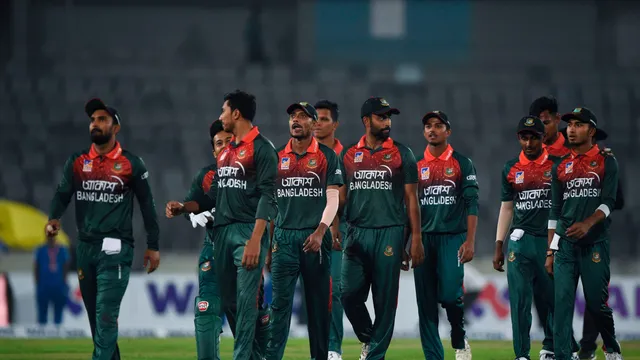

Select Your best Five Cricketer In BPL
The Bangladesh Premier League is a professional Twenty20 cricket league consisting of seven franchises. The BPL is one of the three professional cricket leagues in Bangladesh
Select Your best Five Cricketer in BPL
The Bangladesh Premier League is a professional Twenty20 cricket league consisting of seven franchises.
Select Your best Five Cricketer in BPL
The Bangladesh Premier League is a professional Twenty20 cricket league consisting of seven franchises. The BPL is one of the three professional cricket leagues in Bangladesh
Select Your best Five Cricketer in BPL
The Bangladesh Premier League is a professional Twenty20 cricket league consisting of seven franchises.Select Your best Five Cricketer in BPL
The Bangladesh Premier League is a professional Twenty20 cricket league consisting of seven franchises. The BPL is one of the three professional cricket leagues in Bangladesh